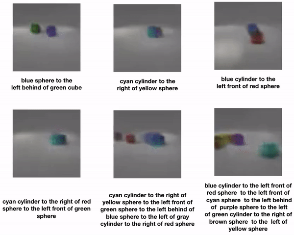
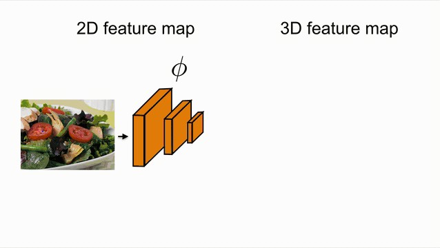
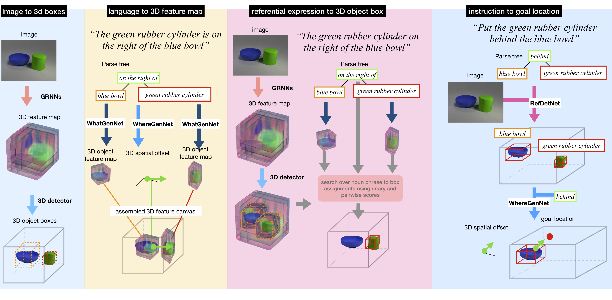
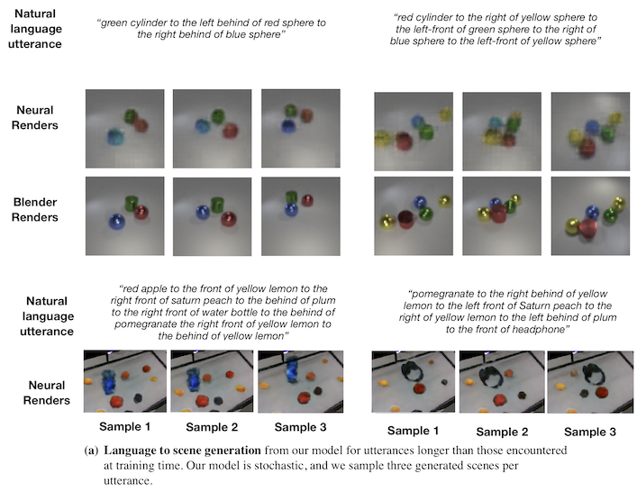
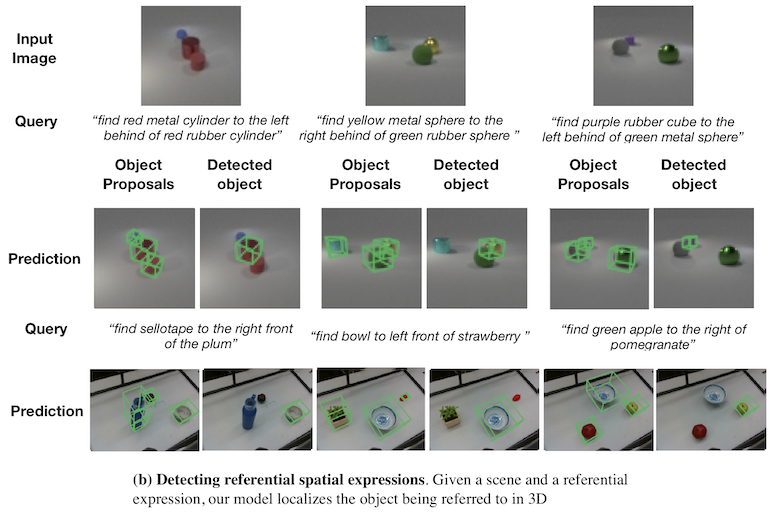
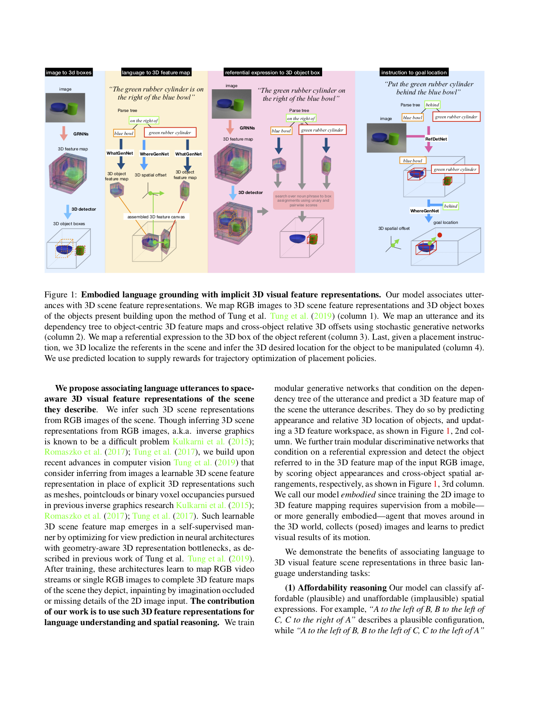

Embodied Language Grounding with Implicit 3D Visual Feature Representations

Abstract
The hypothesis of simulation semantics suggests that people think and reason about language utterances visually. It formally states that processing words and sentences leads to perceptual and motor simulations of explicitly and implicitly mentioned aspects of linguistic content. This work proposes a computational model of simulation semantics that associates language utterances to 3D visual abstractions of the scene they describe. The 3D visual abstractions are encoded as a 3-dimensional visual feature maps. We infer such 3D visual scene feature maps from RGB images of the scene via view prediction: the generated 3D scene feature map when neurally projected from a camera viewpoint it should match the corresponding RGB image. The models we propose have two functionalities: i) conditioned on the dependency tree of an utterance, they generate the related visual 3D feature map and reason about its plausibility (without access to any visual input), and ii) conditioned on the dependency tree of a referential expression and a related image they localize object referents in the 3D feature map inferred from the image. We empirically show our model outperforms by a large margin models of language and vision that associate language with 2D CNN activations or 2D images in a variety of tasks, such as, classifying plausibility of utterances by spatially reasoning over possible and impossible object configurations, 3D object referential detection, inferring desired scene transformations given language instructions, and providing rewards for trajectory optimization of corresponding policies. We attribute the improved performance of our model to its improved generalization across camera viewpoints and reasoning of possible object arrangements, benefits of its 3D visual grounding space, in place of view-dependent images and CNN image features.
GRNNs

Overview of our model

Experiment Results
Language conditioned scene generation:

Detecting referential spatial expressions:

Manipulation instruction following:
Citation

Embodied Language Grounding with Implicit 3D Visual Feature Representations
Mihir_Prabhudesai, Hsiao-Yu Tung, Syed Ashar Javed, Maximilian Sieb, Adam W Harley, Katerina Fragkiadaki
Supplementary |
arXiv preprint |
Code
BibTex
@article{emb_lang,
author = {Mihir Prabhudesai and Hsiao-Yu Tung and Syed Ashar Javed and
Maximilian Sieb and Adam W Harley and Katerina Fragkiadaki},
title = {Embodied Language Grounding with Implicit 3D Visual Feature Representations}},
journal = {arXiv},
year = {2019}
}
@article{emb_lang,
author = {Mihir Prabhudesai and Hsiao-Yu Tung and Syed Ashar Javed and
Maximilian Sieb and Adam W Harley and Katerina Fragkiadaki},
title = {Embodied Language Grounding with Implicit 3D Visual Feature Representations}},
journal = {arXiv},
year = {2019}
}